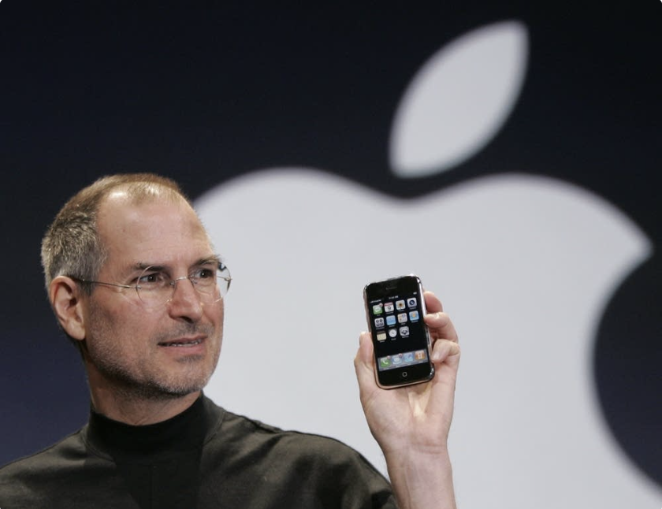

Steve Jobs
The man who pioneered the personal computer revolution.

Steve Jobs holding up an Apple iPhone at the MacWorld Conference in San Francisco, January 09 2007.
Here's a time line of Steve Job's life:
- 1955 - Born in San Francisco, California
- 1972 - Attended Reed College before withdrawing that same year
- 1974 - Traveled through India, seeking enlightenment before later studying Zen Buddhism
- 1976 - Jobs and Steve Wozniak co-founded Apple in 1976
- 1979 - Introduced the Macintosh to Apple's annual shareholders meeting
- 1985 - Departed Apple and founded NeXT (a company that specialize in computers for higher-education and business markets)
- 1986 - Bought the computer graphics division of LucasFilm, which spun off independently as Pixar.
- 1997 - Returned to Apple as CEO and revived Apple from bankruptcy
- 2011 - Passed away from Pancreatic cancer
"The doers are the major thinkers. The people that really
create the things that change this industry are both the thinker
and doer in one person."
-- Steve Jobs
You can find out more information about the former CEO of Apple on his Wikipedia Entry.